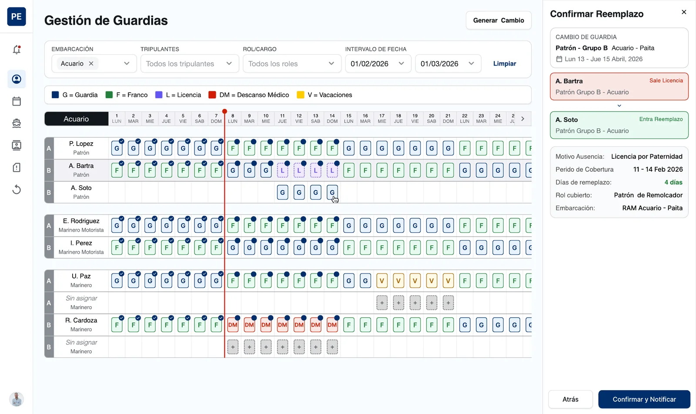
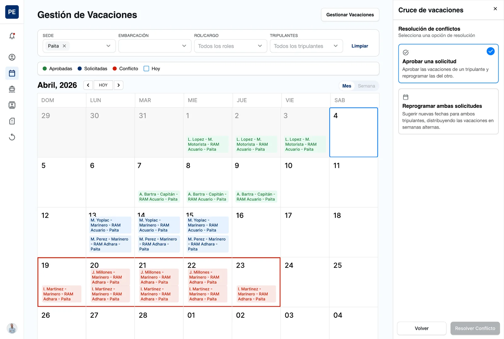
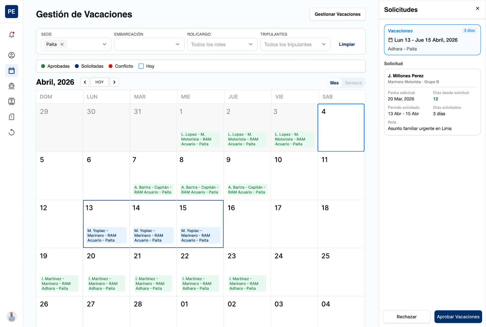
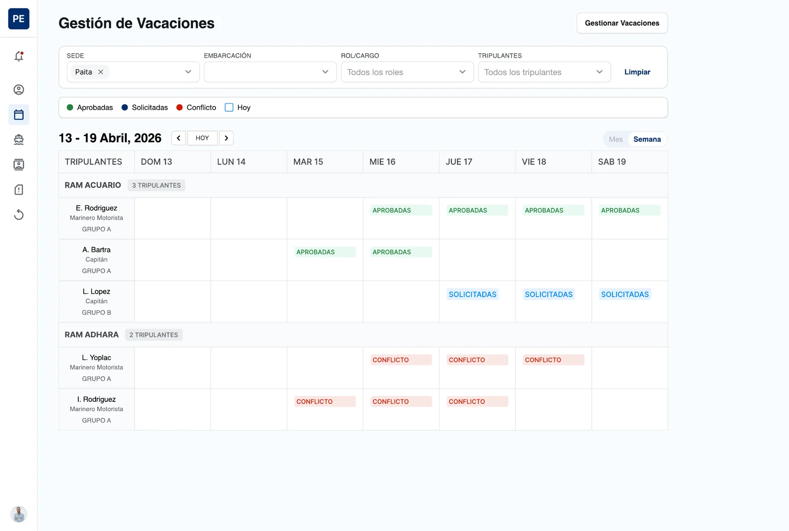
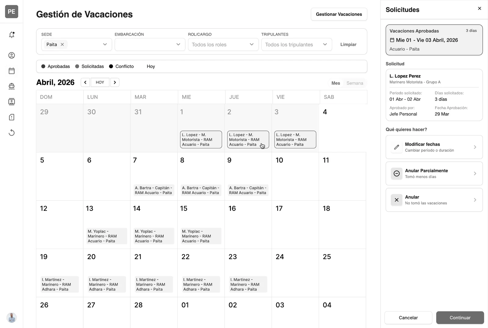

Crew Scheduling · Web app · 2026Gestión de personal · App web · 2026
Personal Embarcado
A web system to plan crew watches, cover absences and resolve vacation conflicts for the fleet of a port services company in Peru. Un sistema web para planificar guardias, cubrir ausencias y resolver cruces de vacaciones del personal embarcado de una empresa de servicios portuarios en Perú.

- The problemEl problema
- Knowing who is on board, who is off and who covers an absence depended on many separate processes — with the risk of leaving vessels short-staffed.Saber quién está a bordo, quién está de franco y quién cubre una ausencia dependía de muchos procesos separados, con el riesgo de dejar embarcaciones sin personal.
- What I didQué hice
- Designed the admin side of the system — watch management and vacation management — from flows to a high-fidelity Figma prototype, reviewed weekly with the client.Diseñé el módulo de administración del sistema —gestión de guardias y de vacaciones—, desde los flujos hasta un prototipo de alta fidelidad en Figma, revisado semanalmente con el cliente.
- The resultEl resultado
- Flows validated with real users before development, and a product that was implemented and went live.Flujos validados con usuarios reales antes del desarrollo y un producto que se implementó y salió en vivo.
- RoleRol
- Freelance UX/UI Designer (through a consultancy)UX/UI Designer freelance (a través de una consultora)
- DurationDuración
- ~3 months~3 meses
- ClientCliente
- A port services company in PeruUna empresa de servicios portuarios en Perú
- MethodologyMetodología
- Design Thinking
- ToolsHerramientas
- Figma
The contextEl contexto
One place to plan crews, instead of many disconnected processesUn solo lugar para planificar tripulaciones, en lugar de muchos procesos desconectados
The client, a port services company in Peru, needed one system for its embarked staff: people and availability, certifications, vacations and leave, crew assignment, boarding and disembarking, watch planning, voyages and a self-service portal for crew members.El cliente, una empresa de servicios portuarios en Perú, necesitaba un solo sistema para su personal embarcado: personal y disponibilidad, certificaciones, vacaciones y licencias, asignación de tripulantes, embarque y desembarque, guardias, travesías y un portal de autogestión para los tripulantes.
The goals: centralize all crew information, optimize watch and voyage assignments, keep digital traceability of boarding, and manage vacations, leave and substitutions with clear approval flows. This case study focuses on the admin side: Watch Management and Vacation Management.Los objetivos: centralizar toda la información del personal, optimizar la asignación de guardias y travesías, mantener la trazabilidad digital del embarque y gestionar vacaciones, licencias y reemplazos con flujos de aprobación claros. Este caso se enfoca en el módulo de administración: Gestión de Guardias y Gestión de Vacaciones.
- 01
Planning staffPersonal de planificación
Build watch rosters and approve vacations, filtering by base, vessel and role.Arman los cuadrantes de guardia y aprueban vacaciones, filtrando por sede, embarcación y cargo.
- 02
Crew membersTripulantes
Masters, motorist sailors and sailors who receive notifications whenever their schedule changes.Patrones, marineros motoristas y marineros que reciben una notificación cada vez que cambia su programación.
- 03
ApproversAprobadores
A head of personnel who signs off on vacations and their changes.Un jefe de personal que aprueba las vacaciones y sus cambios.
How I designed itCómo lo diseñé
Weekly reviews with the client, and real users before any codeRevisiones semanales con el cliente y usuarios reales antes de escribir código
- 01
EmpathizeEmpatizar
Weekly calls and reviews with stakeholders to understand how watches, absences and vacations were handled.Llamadas y revisiones semanales con stakeholders para entender cómo se manejaban las guardias, ausencias y vacaciones.
- 02
DefineDefinir
Functional analysis and a scope split into modules, starting with the admin side.Análisis funcional y un alcance dividido en módulos, empezando por la administración.
- 03
Ideate & prototypeIdear y prototipar
Quick workshops, then the UI design and an interactive prototype in Figma.Workshops rápidos y luego el diseño UI y un prototipo interactivo en Figma.
- 04
TestTestear
In the final weeks, validation sessions with real users and formal acceptance before development started.En las últimas semanas, sesiones de validación con usuarios reales y aceptación formal antes de iniciar el desarrollo.
Watch managementGestión de guardias
Covering an absence became a guided, four-step taskCubrir una ausencia se volvió una tarea guiada de cuatro pasos
The roster shows a month per vessel and crew group (A/B) with a clear legend: G watch, F off duty, L leave, DM medical rest, V vacation. Filters by vessel, crew member, role and date range — and two vessels can be compared side by side.El cuadrante muestra un mes por embarcación y grupo (A/B) con una leyenda clara: G guardia, F franco, L licencia, DM descanso médico, V vacaciones. Se filtra por embarcación, tripulante, cargo e intervalo de fechas, y se pueden comparar dos embarcaciones a la vez.
- 01
Spot the gapDetectar el hueco
Uncovered days appear as an empty “Unassigned” row right under the absent crew member.Los días sin cubrir aparecen como una fila “Sin asignar” justo debajo del tripulante ausente.
- 02
Select staffSeleccionar personal
Candidate cards show experience, base, certificate status and availability.Las tarjetas de candidatos muestran experiencia, sede, estado de certificados y disponibilidad.
- 03
Confirm the replacementConfirmar el reemplazo
A summary of who leaves and who enters, the reason, coverage period, days, role and vessel.Un resumen de quién sale y quién entra, el motivo, el periodo de cobertura, los días, el rol y la embarcación.
- 04
Confirm & notifyConfirmar y notificar
The roster updates and both crew members are notified.El cuadrante se actualiza y se notifica a ambos tripulantes.

Vacation managementGestión de vacaciones
Conflicts are flagged on the calendar and solved in the same placeLos cruces se marcan en el calendario y se resuelven en el mismo lugar
A monthly calendar shows every vacation as Approved, Requested or Conflict. When two crew members in the same role overlap, the admin chooses to approve one request or reschedule both, reviews a summary with suggested new dates, and applies it.Un calendario mensual muestra cada vacación como Aprobada, Solicitada o Conflicto. Cuando dos tripulantes del mismo cargo se superponen, el admin elige aprobar una solicitud o reprogramar ambas, revisa un resumen con fechas sugeridas y lo aplica.

Requests are reviewed in a side panel with the dates, days requested and the crew member’s note, to approve or reject with a reason. A weekly view groups crew by vessel, so overlaps on the same boat stand out.Las solicitudes se revisan en un panel lateral con las fechas, los días pedidos y la nota del tripulante, para aprobarlas o rechazarlas con un motivo. Una vista semanal agrupa a los tripulantes por embarcación para que los cruces en un mismo barco salten a la vista.


Changes to approved vacationsCambios sobre vacaciones aprobadas
Plans change after approval, so the system lets them change safelyLos planes cambian después de aprobarse, así que el sistema permite cambiarlos con seguridad
From an approved vacation, the admin can modify dates, partially cancel or cancel it. Each path ends in a before/after summary (for example, “+2 additional days”) and the crew member’s balance is adjusted automatically.Desde una vacación aprobada, el admin puede modificar fechas, anular parcialmente o anular. Cada camino termina en un resumen de antes y después (por ejemplo, “+2 días adicionales”) y el saldo del tripulante se ajusta automáticamente.

What it provesQué demuestra
Dense operational data can still feel calm and clearLos datos operativos densos también pueden sentirse claros y tranquilos
- A consistent legend and color system make a full month of watches readable at a glance.Una leyenda y un sistema de color consistentes hacen legible de un vistazo todo un mes de guardias.
- Side panels keep the context visible while the admin makes a decision.Los paneles laterales mantienen el contexto visible mientras el admin toma una decisión.
- Validating with real users before development reduces rework once the build starts.Validar con usuarios reales antes del desarrollo reduce el retrabajo cuando empieza la construcción.
Next projectSiguiente proyecto
ComunidAPP
Read the case studyLeer el caso de estudio← Previous projectProyecto anterior · All projectsTodos los proyectos
Contact MeContáctame
Let's explore the exciting project you'd like to dive into!¡Hablemos del proyecto que tienes en mente y hagámoslo realidad!